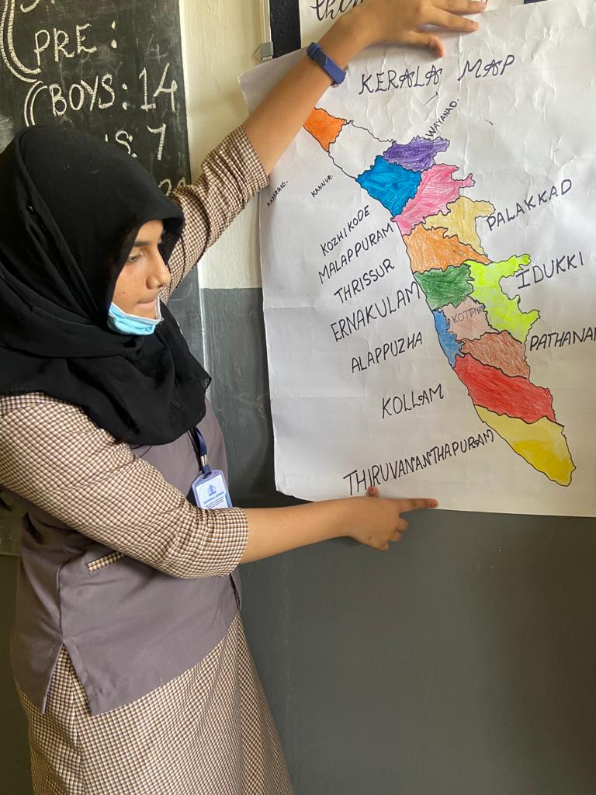

Social Science is the study of the activities of the physical and social environment. Basically, it is the study of human relations or the scientific study of human society. It deals with the humans-their relationships, behaviour, development and resources they use and many kinds of organizations they need to carry in their daily life like the workplace, school, family, government, etc. It is important because its study helps us to gain knowledge of the society we live in. Generally, Social Science focus on the relationships among individuals in society. It is the mixture of many subjects like History, Geography, Political Science, Economics, Sociology, Social Psychology and many more. The main definition of social science is – “The social sciences subjects are those subjects which describe and examine the humans”. Social science is the society related study — the primary reason for Social studies to help students to develop the ability to make the right decisions. It increases the social considerate of students.The inclusion of Social Studies in the curriculum right from primary to secondary classes signifies the importance of the subject and the role it plays in a student’s life. Social Studies is incorporated in the school curriculum through a combination of subjects like – History, Geography, Cultural Studies, Economics, Political Science, Sociology, Psychology, Anthropology, etc.
